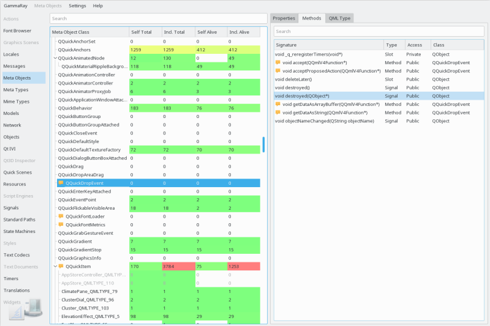

The meta-object browser shows the hierarchy of all QMetaObject instances found in the target in the tree view on the left side. The property view on the right side shows information known by the QMetaObject system, including data from:
GammaRay checks all QMetaObject instances for typical problems such as using unregistered or improperly qualified types on properties or method arguments. In case such issues are detected, a warning icon is shown, and a tooltip informs you about the details. These problems are usually harmless when working with C++ API, but tend to be relevant for dynamic invocation or language bindings, ie. most commonly when exposing the affected types to QML.
The meta-object tree view also contains columns with information about how many instances of a specific type have been created, including and excluding sub-classes.

In particular, these numbers are:
Tooltips and colorization of these columns show the ratio of this type on the overall amount of QObject instances. This is particularly useful for identifying unnecessarily created instances, as QObject construction is not exactly cheap.
For dynamically created QMetaObject instances (such as found in QML defined types or dynamic QtSCXML state charts), it might not be possible for GammaRay to determine the lifetime correctly, those types are grayed out in order to avoid access to already freed memory. For those types you will not be able to access information beyond the basic statistics.